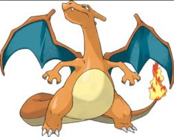
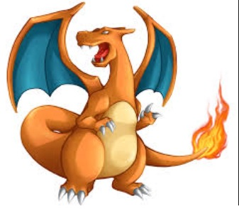

Welcome to Potib, the best free game in the world
Introduction:
In Potib its possible to fight different pokemons, exploring and fight the best trainers in the word!
The game is under construction and is only text-based for the moment. Later on a big map with different cities will be included.
The main objective of the game is to get higher level and fight harder pokemons and trainers
Vocations: There are three vocations in Potib, each got there own advantage. You cant change vocation later in the game, so make up your mind.
Knight is a fighter that can slay the Pokemons in front of him. His first attack is sword attack and later he will learn the powerful attack exori
Paladin is a long ranged archer that can kill the Pokemons from distance. The first attack is spear and later he will learn exori san
Sorcerer is a mage that will use magic to kill the Pokemons. The first attack is wand and later he will learn more mage with great power.
 